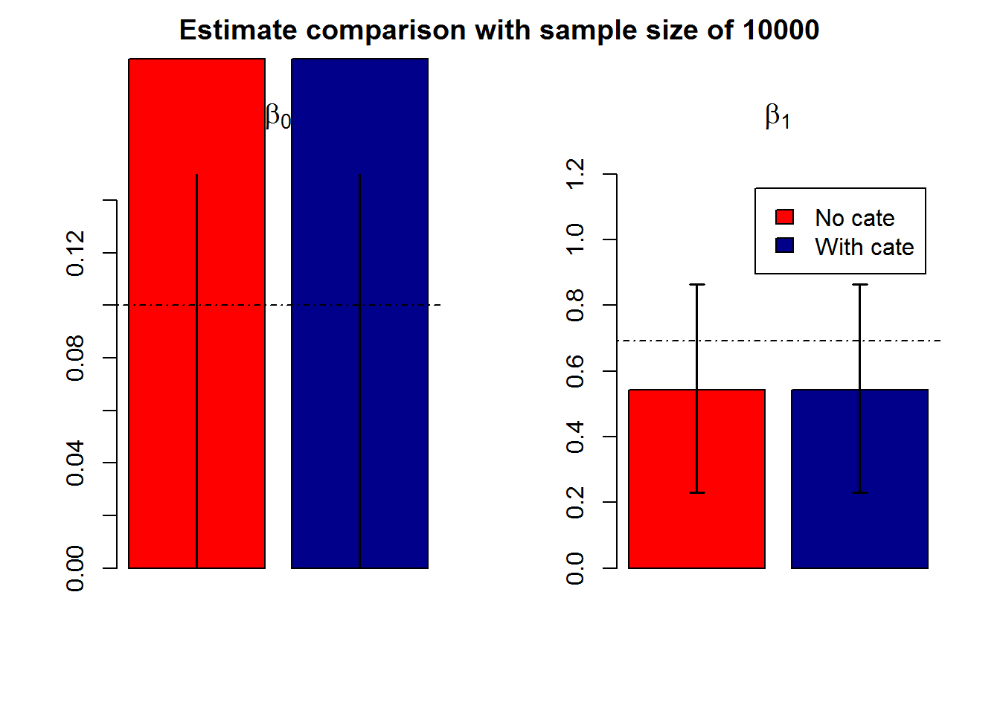
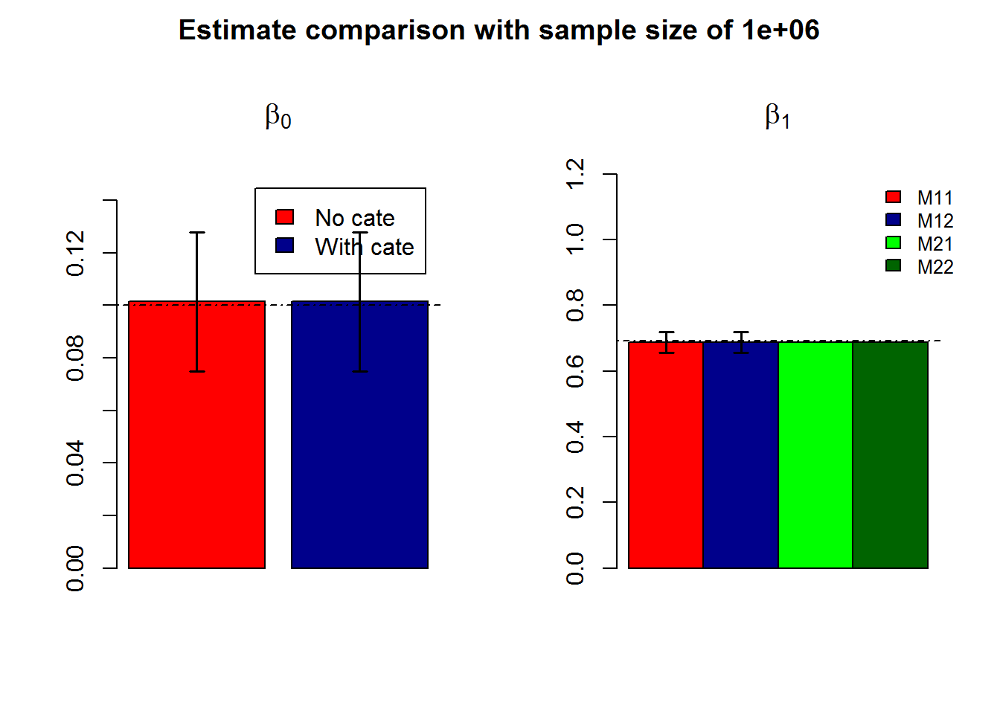

Modeling
Shengtong Han
YYYY-MM-DD
Last updated: 2018-04-10
Code version: 3ae630c
Session information
Base level
At every genomic locus, observed number of mutations, \(y_i\) is modeled as Poisson distribution as
\(y_i \sim Pois(\mu_i)\)
There are several covariates affecting the mutation rate, such as tri-nucleotide context, parents’ age, etc. To relate the mutation rate to covariates \(X_i\), Poisson regression could be one way to do that
\(log(E(y_i|X_i))=log(\mu_i)=X_i^T\beta\)
Thus
\(\mu_i=e^{X_i^T\beta}\).
The likelihood function is
\[ \begin{aligned} L(\beta|Y)&=\prod_i\frac{[e^{X_i^T\beta}]^{Y_i}e^{-e^{X_i^T\beta}}}{Y_i!}\\ &=e^{\sum_i[X_i^T\beta Y_i-e^{X_i^T\beta}]} \times constant \end{aligned} \]
The log likelihood is
\[ \begin{aligned} l(\beta)&=\sum_i[X_i^T\beta Y_i-e^{X_i^T\beta}]+constant\\ &=\sum_i(X_i^T\beta)Y_i-\sum_ie^{X_i^T\beta}+constant \end{aligned} \]
Region level
It’s computationally hard to infer the mutation rate at single base since there are 3B bases in human genome. So consider the window level. Within a window, collapse all bases together, denote \(Y\) by the total number of mutations, assume \(X_i\) are the same across all bases. Within a window, assuming \(Y_i\sim Pois(\mu_i)\) are indepedent poisson random variables, the sum \(Y=\sum_iY_i \sim Pois (\sum_i\mu_i)\)
Considering baseline mutation rate \(\mu_{i0}\) at every base \(i\), then \(Y \sim Pois(\sum_i \mu_{i0} \mu_i)\), where \(\sum_i \mu_{i0}\mu_i=\sum_i\mu_{i0}e^{X_i^T\beta}=e^{X^T\beta}\sum_i\mu_{i0}\), assuming \(x_i^T\beta\) are the same across all bases in the window and \(\sum_i \mu_{i0}\) is the total baseline mutation for the window. Then \(Y_j \sim Pois(\mu_{j0}e^{X_j^T\beta})\)
The likelihood funciton is
\[ \begin{aligned} L(\beta|Y)=\prod_j\frac{[\mu_{j0}e^{X_j^T\beta}]^{Y_j}e^{-\mu_{j0}e^{X_j^T\beta}}}{Y_j!} \end{aligned} \]
and
- \(Y_j\); total number of mutations in window \(j\)
- \(X_j\): a vector of covariates for the window, assuming the same acorss all bases in the window
And the log likelihood function is
\[ \begin{aligned} l(\beta)=\sum_j[Y_jlog(\mu_{j0}e^{X_j^T\beta})]-\sum_j[\mu_{j0}e^{X_j^T\beta}]+constant \end{aligned} \]
Categorization
Human genome has 3B bases, even for 100 bp windows, the computation is still expensive. To speed up, one way is to put all windows with similar features into one category and treat the whole category as a single unit. Suppose we have \(P\) binary features (continuous features could be discretized into discrete values). Totally it is going to be \(2^P\) feature categories. Usually \(2^P << \frac{3B}{L}\), \(L\) is window length.
Let \(c\) index category. \(Y_c\) is the total number of mutations, \(\mu_{c0}\) is the baseline mutation rate, \(X_c\) is the feature covariates.
The likelihood function is
\[ \begin{aligned} logP(Y|\beta) & = \sum_j[Y_jlog(\mu_{j0}e^{X_j^T\beta})]-\sum_j[\mu_{j0}e^{X_j^T\beta}]+constant(following ~LH~of~region~level)\\ &=\sum_c\{Y_c(X_c^T\beta)-\mu_{c0}e^{X_c^T\beta} \}+constant \end{aligned} \]
- \(\mu_{c0}=\sum_j\mu_{j0}\) in category \(c\).
- The last equation is because for category \(c\), all \(X_j=X_c\) are the same, so \(\sum_jY_j(X_j^T\beta)=X_c^T\beta \sum_jY_j=Y_c(X_c^T\beta)\).
Thus \(Y_c\sim Pois(\mu_{c0}e^{X_c^T\beta})\). Another way to understand it is that since \(Y_j \sim Pois(\mu_{j0}e^{X_j^T\beta})\), in category \(c\), the sum of \(\sum_j Y_j \sim Pois(\sum_j \mu_{j0}e^{X_j^T\beta})\), where \(\sum_j \mu_{j0}e^{X_j^T\beta}=e^{X_c\beta} \sum_j \mu_{j0}=\mu_{c0}e^{X_c\beta}\), assuming \(Y_j\) are independent.
Likelihood and derivative
Let \(f(\beta)=\sum_c\{Y_c(X_c^T\beta)-\mu_{c0}e^{X_c^T\beta} \}\) be the objective function to be optimized over \(\beta\). \(\frac{\partial f(\beta)}{\partial \beta_i}=\sum_c (Y_c(X_{ic})-\mu_{c0}X_{ic}e^{X_c\beta})\), \(i=1, \cdots, P\).
Simulations
Constant baseline mutation rate \(\mu_0\)
Use true baseline mutation rate as offset
#rm(list=ls())
set.seed(1000)
n <- 10000
baseline.rate=0.01
#regression coefficients
beta0 <- 0.1
beta1 <- log(2)
#generate covariate values
x <- rbinom(n, 1, prob=0.5)
#compute mu's
mu <- exp(beta0 + beta1 * x)*baseline.rate
#generate Y-values
y <- rpois(n=n, lambda=mu)
#data set
data <- data.frame(y=y, x=x)
y0=sum(data$y[data$x==0]); y1=sum(data$y[data$x==1])
cate.data=data.frame(y=c(y0,y1), x=c(0,1))
fit=glm(data$y~data$x+offset(log(rep(baseline.rate, n))), family=poisson())
cate.fit=glm(cate.data$y~cate.data$x+offset(log(c(baseline.rate*sum(x==cate.data$x[1]), baseline.rate*sum(x==cate.data$x[2])))), family=poisson())
fit.conf=confint(fit)Waiting for profiling to be done...cate.fit.conf=confint(cate.fit)Waiting for profiling to be done...
- sample size, i.e. number of windows \(N=10^4\)
- baseline rate is constant across all windows \(\mu_0=0.01\).
- \(\beta_0=0.1, \beta_1=log(2)\).
Waiting for profiling to be done...
Waiting for profiling to be done...- sample size, i.e. number of windows \(N=10^6\)
- baseline rate is constant across all windows \(\mu_0=0.01\).
- \(\beta_0=0.1, \beta_1=log(2)\).

- when use true baseline mutation rate, GLM with categorization and without give mostly identical results and both results are approaching to their true values when \(n \geq 10^6\).
Use estimated baseline mutation rate
In most cases, we never know the true baseline mutation rate, so we may have to use their estimates
fit=glm(data$y~data$x+offset(log(rep(sum(data$y)/n, n))), family=poisson())
cate.fit=glm(cate.data$y~cate.data$x+offset(log(c(sum(cate.data$y)/n*sum(x==cate.data$x[1]), sum(cate.data$y)/n*sum(x==cate.data$x[2])))), family=poisson())
- with estimated baseline mutation rate as offset, intercept esmtiate is not correct, but \(\widehat{\beta_1}\) is good.
Variable baseline mutatiom rate \(\mu_{i0}\)
use true baseline mutation rate
Waiting for profiling to be done...
Waiting for profiling to be done...
- \(\mu_{i0}\) is generated by \(\mu_{i0} \sim rbeta(n, 1, 100)\)

use estimated baseline mutation rate
fit=glm(data$y~data$x+offset(log(rep(sum(data$y)/n, n))), family=poisson())
cate.fit=glm(cate.data$y~cate.data$x+offset(log(c(sum(cate.data$y)/n*sum(x==cate.data$x[1]), sum(cate.data$y)/n*sum(x==cate.data$x[2])))), family=poisson())- with estimated baseline mutation rate as offset, intercept esmtiate is not correct, but \(\widehat{\beta_1}\) is good.
sessionInfo()R version 3.4.3 (2017-11-30)
Platform: x86_64-w64-mingw32/x64 (64-bit)
Running under: Windows 7 x64 (build 7601) Service Pack 1
Matrix products: default
locale:
[1] LC_COLLATE=English_United States.1252
[2] LC_CTYPE=English_United States.1252
[3] LC_MONETARY=English_United States.1252
[4] LC_NUMERIC=C
[5] LC_TIME=English_United States.1252
attached base packages:
[1] stats graphics grDevices utils datasets methods base
loaded via a namespace (and not attached):
[1] compiler_3.4.3 backports_1.0.5 magrittr_1.5 rprojroot_1.3-1
[5] tools_3.4.3 htmltools_0.3.5 yaml_2.1.16 Rcpp_0.12.10
[9] stringi_1.1.5 rmarkdown_1.8 knitr_1.17 git2r_0.21.0
[13] stringr_1.2.0 digest_0.6.12 evaluate_0.10 This R Markdown site was created with workflowr